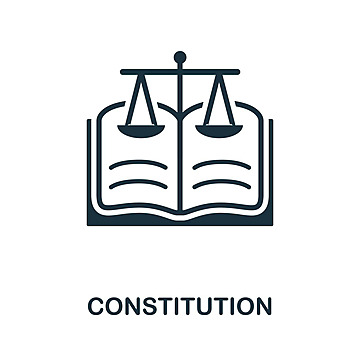
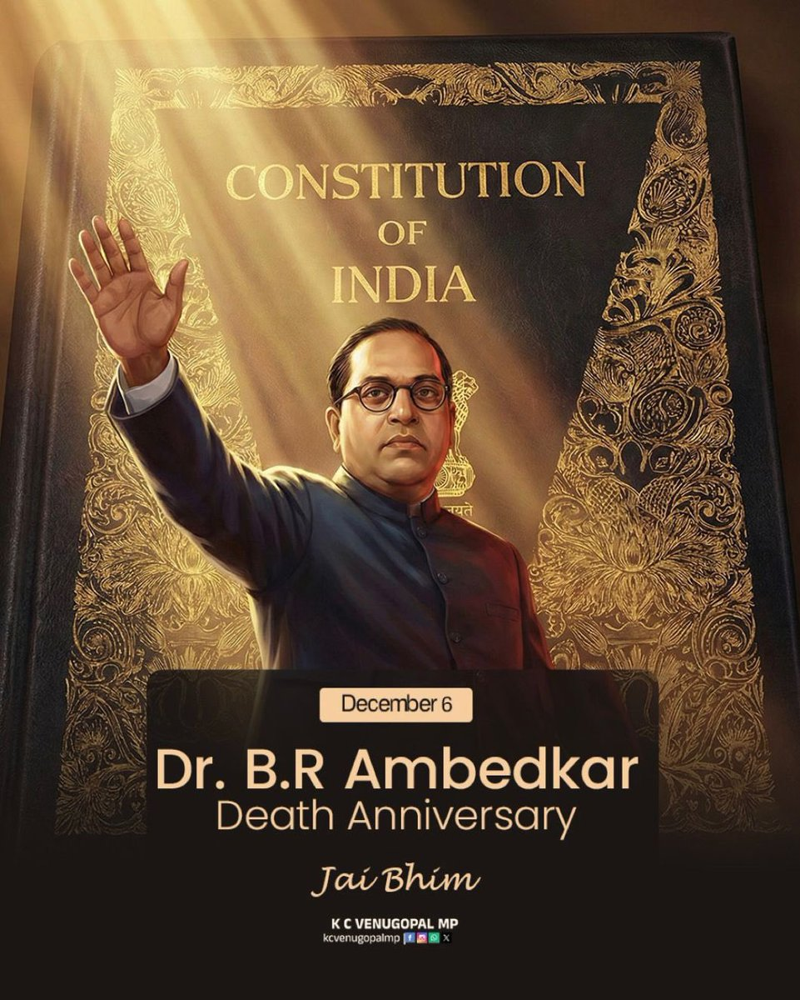

The Indian Constitution

About the Indian Constitution
The Constitution of India is the supreme law of India. It was adopted by the Constituent Assembly on 26 November 1949 and came into effect on 26 January 1950. It is the longest written constitution of any sovereign country in the world, with 448 articles, 25 parts, and 12 schedules. The constitution declares India to be a sovereign, socialist, secular, and democratic republic.

Dr. B.R. Ambedkar - Chairman of the Drafting Committee
Key Features
The Constitution of India is the longest written constitution in the world. It establishes a parliamentary system of government, provides for federalism with a unitary bias, and ensures an independent judiciary. The Constitution of India is remarkable for its comprehensiveness and detail, making it the longest written constitution in the world. One of its key features is the establishment of a parliamentary system of government, modeled on the British system, where the executive is accountable to the legislature. It also provides for a federal structure with a unitary bias, meaning that while powers are divided between the Union and the States, the Union government has overriding authority in times of emergency. Another important feature is the independent judiciary, which ensures the supremacy of the Constitution and protects the rights of citizens. The Constitution also incorporates universal adult suffrage, granting every citizen above the age of 18 the right to vote, regardless of caste, creed, or gender. It blends rigidity and flexibility by allowing amendments through different procedures depending on the nature of the change. The Constitution also embraces secularism, ensuring that the state does not favor any religion and guarantees freedom of conscience and the right to practice any faith. It emphasizes social justice by including provisions for the upliftment of marginalized communities, such as Scheduled Castes and Scheduled Tribes. Furthermore, it integrates Directive Principles of State Policy to guide governance toward creating a welfare state. The Constitution also provides for emergency provisions to safeguard national security and unity. Its adaptability has allowed India to evolve democratically while maintaining stability. Overall, the key features reflect a balance between tradition and modernity, ensuring that India remains a sovereign, socialist, secular, and democratic republic.
Fundamental Rights
The Constitution guarantees six fundamental rights to all citizens: Right to Equality, Right to Freedom, Right against Exploitation, Right to Freedom of Religion, Cultural and Educational Rights, and Right to Constitutional Remedies. The Fundamental Rights enshrined in the Constitution of India are considered the cornerstone of democracy, ensuring that citizens enjoy essential freedoms and protections. These rights are enforceable by law and can be upheld through the judiciary. The Constitution guarantees six broad categories of rights. The Right to Equality ensures that all citizens are equal before the law and prohibits discrimination based on religion, race, caste, sex, or place of birth. The Right to Freedom provides citizens with freedoms such as speech and expression, assembly, association, movement, residence, and profession, subject to reasonable restrictions. The Right against Exploitation prohibits human trafficking, forced labor, and child labor in hazardous industries. The Right to Freedom of Religion guarantees freedom of conscience and the right to profess, practice, and propagate any religion, while ensuring that the state remains secular. The Cultural and Educational Rights protect the interests of minorities by allowing them to preserve their culture, language, and script, and establish educational institutions of their choice. Finally, the Right to Constitutional Remedies empowers citizens to approach the Supreme Court or High Courts if their rights are violated, making the judiciary the guardian of Fundamental Rights. These rights are not absolute; they are subject to reasonable restrictions to maintain public order, morality, and national security. However, they remain essential for safeguarding individual liberty and promoting equality. The Fundamental Rights embody the spirit of democracy and ensure that India remains a nation where citizens can live with dignity, freedom, and justice.
Directive Principles
The Directive Principles of State Policy are guidelines for governance aimed at establishing social and economic democracy. They include provisions for welfare of the people, equal distribution of wealth, and promotion of international peace. The Directive Principles of State Policy are guidelines for governance included in the Constitution of India to ensure that the state works toward establishing a just and equitable society. Though not legally enforceable, they are fundamental in the governance of the country and aim to create a welfare state. These principles direct the government to promote social and economic justice, reduce inequalities, and ensure the dignity of individuals. They include provisions for securing adequate means of livelihood, ensuring equal pay for equal work, protecting children and workers, and promoting education and public health. The Directive Principles also emphasize the need to organize agriculture and animal husbandry on modern lines, protect the environment, and safeguard monuments of national importance. They encourage the state to promote international peace and security, reflecting India’s commitment to global harmony. Some principles are inspired by the Irish Constitution, while others draw from Gandhian ideals, such as promoting cottage industries and prohibiting intoxicating drinks. The Directive Principles serve as a moral compass for lawmakers and policymakers, guiding them to frame policies that uplift the weaker sections of society, including Scheduled Castes, Scheduled Tribes, and other disadvantaged groups. They complement the Fundamental Rights by focusing on collective welfare rather than individual liberty. Over time, courts have interpreted these principles to harmonize them with Fundamental Rights, ensuring that governance remains balanced. Together, they reflect the vision of the framers of the Constitution to build a nation based on justice, liberty, equality, and fraternity.
Amendments
The Constitution has been amended over 100 times to meet changing needs. The 42nd Amendment (1976) is known as the "Mini Constitution," while the 44th Amendment (1978) restored many rights curtailed during the Emergency. The Constitution of India is designed to be both rigid and flexible, allowing for amendments to meet the changing needs of society while preserving its core principles. Amendments are made under Article 368, which provides different procedures depending on the nature of the change. Some amendments require a simple majority in Parliament, others need a special majority, and certain amendments also require ratification by at least half of the state legislatures. Since its adoption, the Constitution has been amended over 100 times. The First Amendment (1951) introduced restrictions on freedom of speech to protect public order and added provisions for land reform. The 42nd Amendment (1976), often called the “Mini Constitution,” made sweeping changes, including the addition of the words socialist and secular to the Preamble, and expanded the powers of the central government. The 44th Amendment (1978) restored many rights curtailed during the Emergency, reaffirming the importance of democracy. The 73rd and 74th Amendments (1992) strengthened local self-governance by empowering Panchayats and Municipalities. The 86th Amendment (2002) made education a Fundamental Right for children aged 6 to 14. Amendments reflect India’s evolving political, social, and economic landscape, ensuring that the Constitution remains relevant. While the process is deliberately complex to prevent hasty changes, it allows for necessary reforms to strengthen democracy. The amendment process demonstrates the foresight of the framers, who envisioned a Constitution capable of adapting to future challenges while safeguarding the nation’s core values.